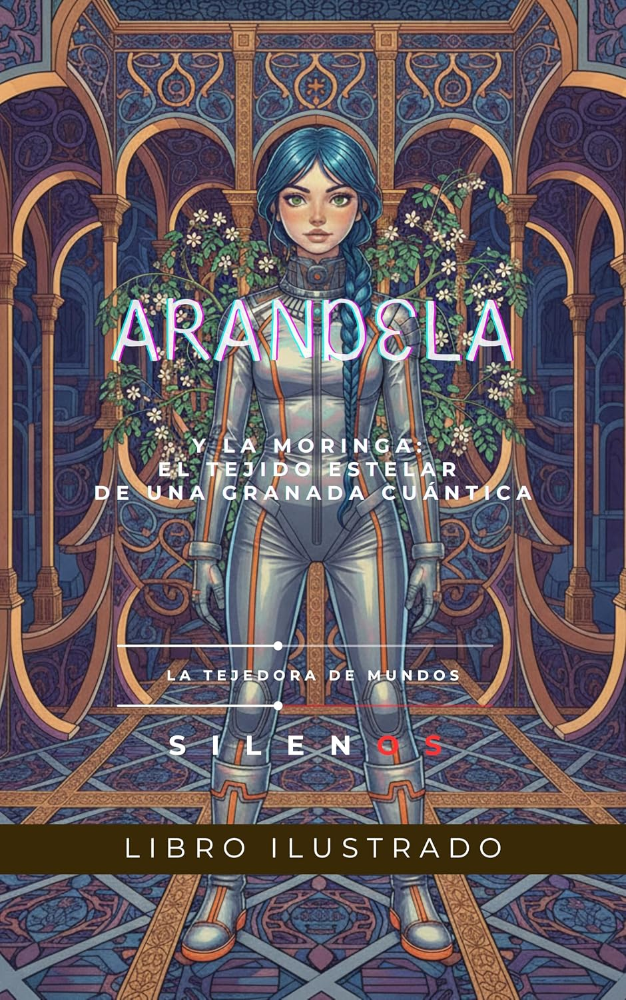

Arandela Colocada
ARANDELA: La Moringa: El Tejido Estelar de Una Granada Cuántica (SCI-FI nº 4)
Sinopsis
Arandela, una audaz exploradora intergaláctica a bordo de su BANANONAVE BLACJ, es atraída al sistema estelar Moringa por crípticas señales de auxilio y anomalías gravitacionales. Descubre un planeta que es una réplica 'flamencopunk' de la antigua Granada, bajo la amenaza inminente de los 'Horneros', seres cósmicos que buscan 'descoser' el 'Tejido Temporal de Moringa'. Guiada por el Profesor Alcaraz, Arandela recibe el 'Chispero Cósmico', un artefacto ancestral clave para repeler la invasión en la Alhambra atómpunk. Paralelamente, en la Taberna del Beso Astral, Arandela conoce a Miguel, un enigmático mago de la Orden Illuminati que la introduce a las 'Frecuencias Armónicas' del universo y la verdadera naturaleza espiritual del Chispero. Mientras, Bruno, el Luthier Sombrío, persigue a Miguel para obtener su poder, desatando un 'Duelo de Bulerías y Rap' que genera 'Tormentas Cuánticas' y atrae la atención de un escéptico enviado de la Orden Illuminati. Arandela busca consejo de Lola la Astróloga en el Sacromonte, quien desvela la verdad de Moringa como un nexo temporal. Armonizando la sabiduría ancestral, las enseñanzas de Miguel y un enfoque pragmático, Arandela desata el Chispero Cósmico, 'reafirmando el orden temporal' de Moringa y salvando el planeta. Esta experiencia conduce al 'Despertar de Arandela', quien comprende que la verdadera exploración es interior, y a la 'Epifanía de Bruno'. La historia culmina con 'La Armonía de las Diversidades en Moringa', donde incluso la lógica puramente científica de la Orden Illuminati empieza a cuestionar sus dogmas ante la compleja interconexión cósmica.